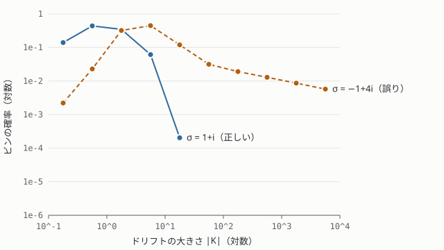
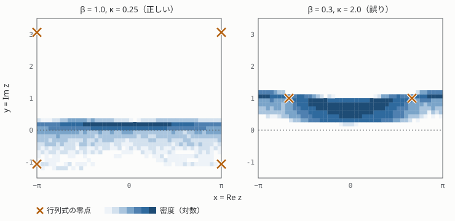

付録 C の cl_toy_models.py による数値実験 / Aarts と Stamatescu 2008, Aarts ほか 2017 の模型 トイモデルで見る成功と失敗
厳密値が分かる 3 つのトイモデルで CL を走らせ、正しく収束する例と誤った値に収束する例を並べる。誤った例ではドリフト分布が冪的な裾をもち、第 5 章の判定条件がそれを検出できることを確かめる。
このページの内容
複素ガウス模型
第 4 章で解析的に解いた \(S=\frac{\sigma}{2}z^2\) を数値で確かめる。数値は乱数種に依存するので、統計誤差の範囲で再現されればよい。
| \(\sigma\) | CL \(\langle z^2\rangle\) | 厳密値 \(1/\sigma\) | CL \(\langle z^4\rangle\) | 厳密値 \(3/\sigma^2\) |
|---|---|---|---|---|
| \(1+i\) | \(0.4997-0.5018i\ (\pm0.004)\) | \(0.5-0.5i\) | \(-0.002-1.514i\ (\pm0.02)\) | \(-1.5i\) |
| \(1+3i\) | \(0.1004-0.3022i\ (\pm0.002)\) | \(0.1-0.3i\) | \(-0.246-0.182i\ (\pm0.005)\) | \(-0.24-0.18i\) |
ゼロ次元 φ⁴ 模型
\(S = \frac{\sigma}{2}z^2 + \frac{\lambda}{4}z^4\)（\(\lambda=1\)）で、\(\sigma\) の実部の符号を変えた 2 例を比べる。厳密値は実軸上の数値積分による。
| \(\sigma\) | CL \(\langle z^2\rangle\) | 厳密値 | \(\max\lvert y\rvert\) | \(\lvert K\rvert\) の 99.9% 分位点 |
|---|---|---|---|---|
| \(1+i\) | \(0.4298-0.1486i\ (\pm0.002)\) | \(0.4281-0.1480i\) | 0.28 | 8.2 |
| \(-1+4i\) | 発散的に揺らぐ（誤差 \(\gtrsim3\)） | \(-0.1261-0.3765i\) | 222 | \(8\times10^5\) |

\(\sigma=1+i\) では分布が細い帯 \(|y|\lt0.3\) に閉じ込められ、ドリフト分布は速く減衰し（）、正しい答えを得る。 \(\sigma=-1+4i\) では虚方向への大きな逸脱が起き、\(|K|\) の分布が冪的な長い裾をもち、結果は正しくない。ステップ幅を 1/10 にしても改善しないので、 離散化誤差ではない。
有限密度 U(1) one-link 模型
の厳密解は修正ベッセル関数で書ける（演習 6.2）。
ドリフト \(K=-\beta\sin z - \kappa\sin(z-i\mu)/[1+\kappa\cos(z-i\mu)]\) は、「行列式」\(1+\kappa\cos(z-i\mu)\) の零点 \(z=\pm\arccos(-1/\kappa)+i\mu\) で極をもつ。
| \((\beta,\kappa,\mu)\) | CL \(\langle e^{ix}\rangle\) | 厳密値 | CL \(\langle e^{-ix}\rangle\) | 厳密値 |
|---|---|---|---|---|
| \((1,\,0.25,\,1)\) | \(0.456\ (\pm0.003)\) | \(0.4511\) | \(0.678\ (\pm0.005)\) | \(0.6749\) |
| \((0.3,\,2,\,1)\) | \(0.255\ (\pm0.001)\) | \(0.3748\) | \(1.154\ (\pm0.010)\) | \(1.9692\) |

\(\kappa=0.25\) では零点が \(\Re z=\pi\)、\(\Im z\approx3.06,\,-1.06\) にあり、下側の零点も分布の薄い裾に接する程度である。結果は \(\Order{\epsilon}\) の離散化誤差の範囲で正しい。 \(\kappa=2\) では零点 \(z=\pm2.094+i\) が分布の中に入り込み（）、 統計的には非常に精度が良いのに間違った値に収束する。
参考文献
- Aarts, Gert, と Ion-Olimpiu Stamatescu. 2008.「Stochastic quantization at finite chemical potential」. JHEP 09: 018. arXiv:0807.1597.
- Aarts, Gert, Erhard Seiler, Dénes Sexty, と Ion-Olimpiu Stamatescu. 2017.「Complex Langevin dynamics and zeroes of the fermion determinant」. JHEP 05: 044. arXiv:1701.02322.